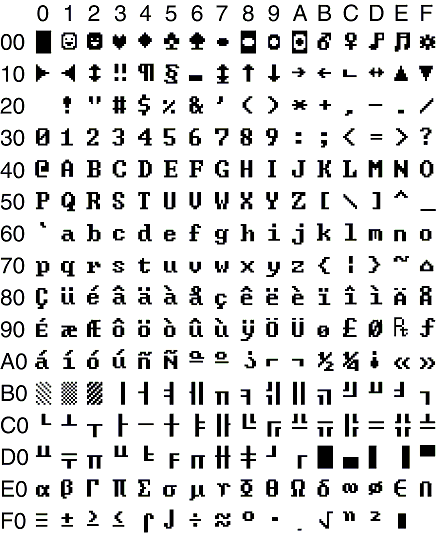

Character map
The character map for the Opticon terminals is shown below. The characters can be used
in the various printing functions like printf(), putchar(), etc.
These characters are available in all system fonts.
Character 0x7F on the PX35, PX36, H13, OPL9815, H13+, OPH300x & OPH100x terminals is the € (euro sign).
Note that some characters like 0x0A or 0x0D can only be printed on the display by
printsymbol().

2. Example program showing the character map
The following example is a small program that shows all characters 0x00 - 0xFF, 16 at a time.
When you press an arbitrary key the next 16 characters will be displayed.
#include <stdio.h>
#include "lib.h"
#define STEP 16
#define SPACE 32
void main( void )
{
int i, j;
while(1)
{
for( i=0; i<256; i+= STEP )
{
for( j=0; j<STEP/2; j++ )
{
gotoxy(j,0);
printsymbol(SPACE);
if (i + j < 256)
printsymbol(i + j);
}
for( j=0; j<STEP/2; j++ )
{
gotoxy(j,1);
printsymbol(SPACE);
if (i + j + STEP/2 < 256)
printsymbol(i + j + STEP/2);
}
gotoxy(12,0);
printf("%03d", i);
gotoxy(12,1);
printf("%03d", i + STEP - 1);
ResetKey();
while(!kbhit())
Idle();
}
}
}